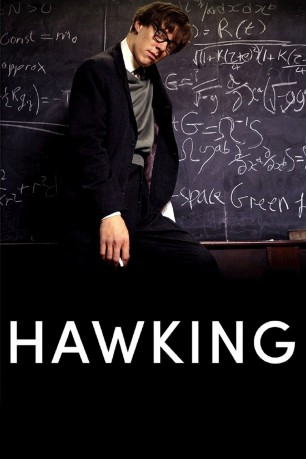
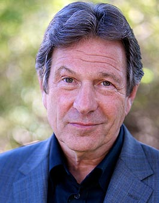
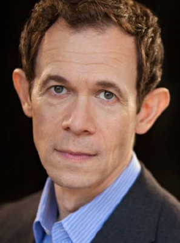
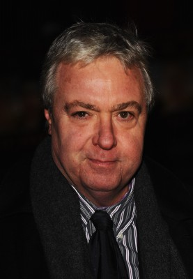
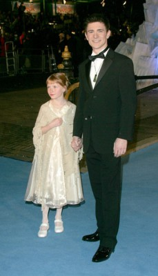
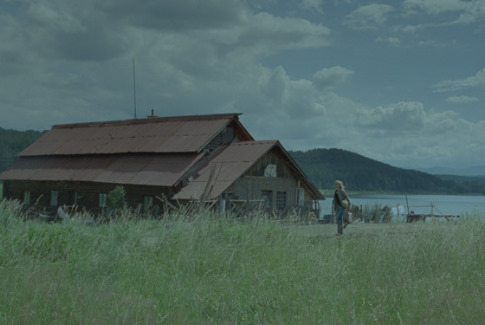

#4156 Hawking - Die Suche nach dem Anfang der Zeit
Alternativ: Hawking
 
 IMDB-Wertung: 7.7 / 10
IMDB-Wertung: 7.7 / 10  Metascore: 0
Metascore: 0 
Bei dem jungen Physiker Stephen Hawking wird die Krankheit ALS diagnostiziert, nur kurz vor Abschluss seines Studiums in Oxford. Obwohl er innerhalb kurzer Zeit völlig gelähmt sein wird, studiert er weiter und entdeckt bald eine Formel über den Anfang der Zeit.
Jahr: 2004
Dauer: 88 Minuten
FSK: 0
Land: England Studio: PolybandTonspuren: DD2.0 - ,
Untertitel:
Auflösung: 1080p (1920x1080) Größe: 5703 MB
Genre: Drama, Biographie
Regisseur: Philip Martin
Drehbuch: Jeremy White
Soundtrack:
Darsteller:
 Benedict Cumberbatch als Stephen Hawking
Benedict Cumberbatch als Stephen Hawking-  Michael Brandon als Arno Penzias
 Christian Rubeck als Reporter
Christian Rubeck als Reporter- Phoebe Nicholls als Isobel Hawking
 Matthew Marsh als Dr. John Holloway
Matthew Marsh als Dr. John Holloway-  Adam Godley als Frank Hawking
 Peter Firth als Sir Fred Hoyle
Peter Firth als Sir Fred Hoyle- Rohan Siva als Jayant Narlikar
- Bertie Carvel als George Ellis
-  John Sessions als Dennis Sciama
 Sebastian Armesto als Robert Silkin
Sebastian Armesto als Robert Silkin Alice Eve als Martha Guthrie
Alice Eve als Martha Guthrie- Anthony Howell als Hamlet
- Leon Ockenden als Rosencrantz
- Carolina Giammetta als Lidia Sciama
-  Mark Wells als Cyclist #1
- Philip McGinley als Chris
- Charlie Beall als Hugh
- Tom Hodgkins als Robert Wilson
- Lisa Dillon als Jane Wilde
-  Anastasia Hille als Nurse Susan McClean
- Tom Ward als Roger Penrose
- Deirdre Costello als Barmaid
- Che Cartwright als Guildenstern
- Linda Spurrier als Train Passenger
- James Warrior als Cab Driver
- David McKail als Frink
- Rory Copus als Edgar
- Dominic Price als Cyclist #2
- Daniel Pope als TV Producer
- Jasmine McIntosh als Sciama's Daughter #1
- Mariana Bird als Sciama's Daughter #2
Datei: X:\2004(G-M)\Hawking - Die Suche nach dem Anfang der Zeit (2004, FSK0, 1920x1080).mkv seit 27.07.2016
Festplatte: HD 2003-2004-2005(A-F)
 Es gibt insgesamt 41 Filme in der Gruppe '2004(G-M)'
Es gibt insgesamt 41 Filme in der Gruppe '2004(G-M)'